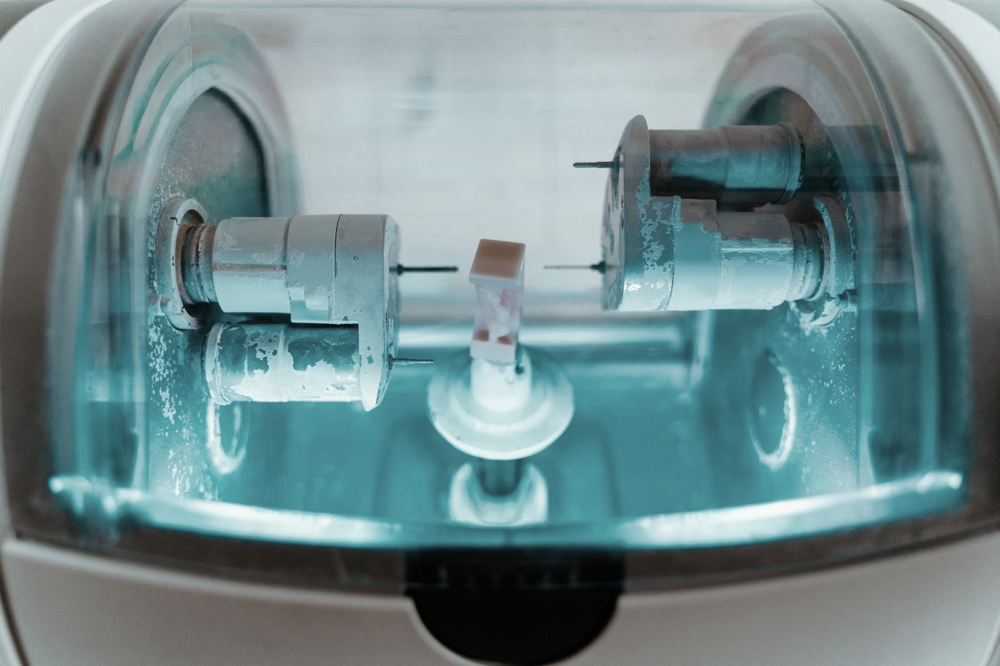

Sector
Laboratorios de prótesis dental en España.
Nos centramos en los laboratorios que diseñan y fabrican prótesis dentales a medida para clínicas: un negocio técnico y regulado, basado en la confianza entre el laboratorio y el odontólogo.

Perímetro
Laboratorios de prótesis dental a medida.
- Prótesis fija: coronas y puentes en circonio, disilicato y metal-cerámica
- Prótesis sobre implantes
- Prótesis removible: completa, parcial y esquelética
- Ortodoncia, férulas y aparatología
- Diseño CAD/CAM, fresado e impresión 3D, también para otros laboratorios
Conocemos también las actividades que a menudo acompañan a estos laboratorios, como los centros de fresado, la distribución de materiales o los servicios de diseño digital, y las tenemos en cuenta al valorar cada operación.
Enfoque
Cómo analizamos cada oportunidad.
Actividad y tecnología
La mezcla de productos y materiales, el grado de digitalización y la capacidad productiva del laboratorio.
Clínicas y equipo
El tipo de clínicas clientes, la recurrencia de sus pedidos, el equipo técnico y el papel del propietario en el día a día.
Encaje
Qué compradores estratégicos o financieros tienen una lógica clara para adquirir el laboratorio, y por qué.
¿Es propietario de un laboratorio o inversor en el sector?
Comentamos el mercado y su situación en una conversación reservada.